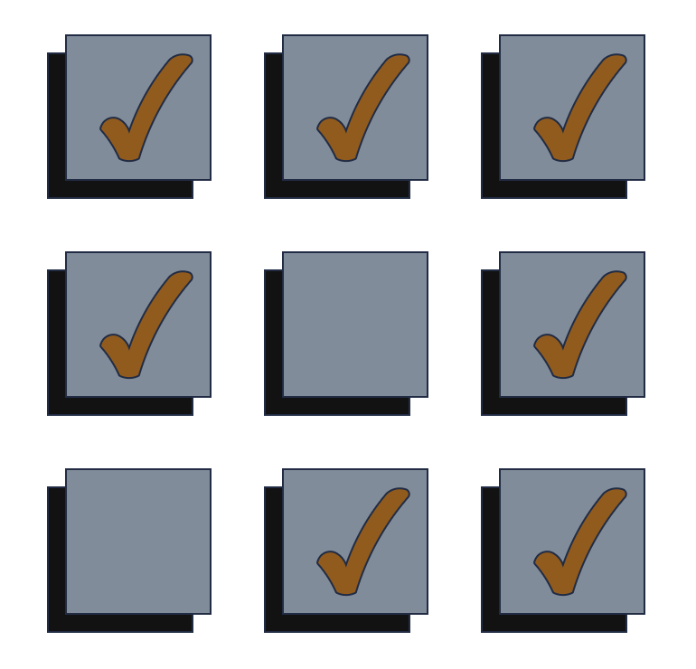
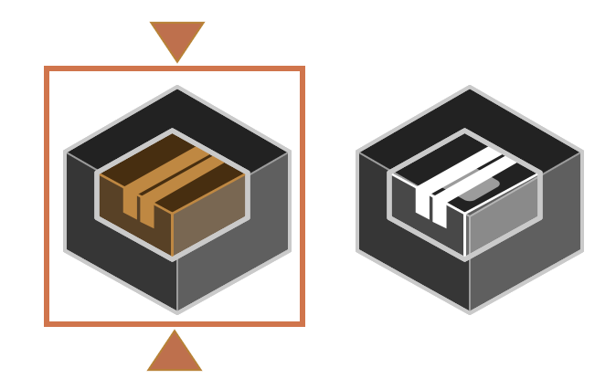
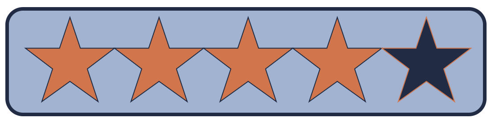
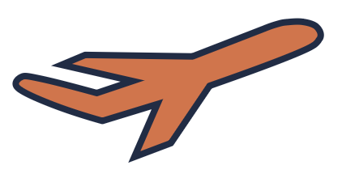
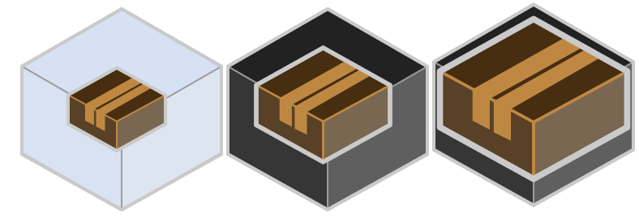
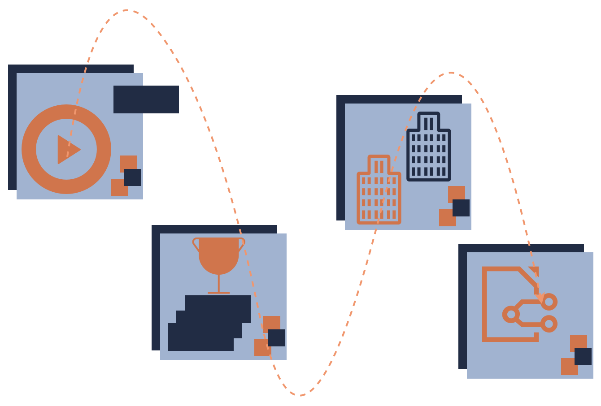

La mayoría de la planeación estratégica no tiene nada que ver con la estrategia.
Esta cosa llamada planeación ha existido durante mucho tiempo. Las personas planificaban las actividades que iban a realizar. Más recientemente, ha surgido una disciplina llamada estrategia. Las personas han combinado ambas cosas para llamarlas planeación estratégica. Desafortunadamente, esas cosas no son lo mismo, estrategia y planeación. Así que simplemente ponerlas juntas y llamarlas planeación estratégica no ayuda.
Lo que la mayoría de la planeación estratégica es en el mundo empresarial no tiene nada que ver con la estrategia. Tiene la palabra, pero no lo es.
Es un conjunto de actividades que la empresa dice que va a hacer.

Vamos a mejorar la experiencia del cliente. Vamos a abrir esta nueva planta. Vamos a iniciar un nuevo programa de desarrollo de talentos. Toda una lista de ellas, y todas suenan bien, pero los resultados de todas esas no harán que la empresa esté contenta porque no tenían una estrategia.
Un plan no es una estrategia
¿Qué es una estrategia? Una estrategia es un conjunto integral de opciones que te posicionan en un campo de juego de tu elección de manera que ganes. Así que hay una teoría. La estrategia tiene una teoría. Aquí está por qué deberíamos estar en este campo de juego, no en este otro,

y aquí está cómo, en ese campo de juego, vamos a ser mejores que nadie en servir a los clientes en ese campo de juego. Esa teoría tiene que ser coherente. Tiene que ser factible. Tienes que poder traducirla en acciones para que sea una gran estrategia.
La planeación no tiene que tener tal coherencia, y típicamente es lo que las personas en la fabricación quieren - las pocas cosas que quieren, construir una nueva planta, y las personas de marketing quieren lanzar una nueva marca, y las personas de talento quieren contratar más personas - esa tiende a ser una lista que no tiene coherencia interna y no especifica una forma de que eso se vaya a lograr colectivamente alguna meta para la empresa.
¿Por qué los líderes se enfocan tanto en la planeación?
La planeación es bastante reconfortante. Los planes típicamente tienen que ver con los recursos que vas a gastar. Así que vamos a construir un plan. Vamos a contratar personas. Vamos a lanzar un nuevo producto. Esas son todas cosas que están en el lado del costo de los negocios. ¿Quién controla tus costos? ¿Quién es el cliente de tus costos? La respuesta es, tú. Tú decides cuántos metros cuadrados alquilar, cuántas materias primas comprar, cuántas personas contratar. Esas son más cómodas porque las controlas.
Una estrategia, por otro lado, especifica un resultado, un resultado competitivo que deseas lograr, que implica que los clientes quieran tu producto o servicio lo suficiente como para comprarlo en cantidad suficiente para hacer la rentabilidad que deseas. La cosa complicada sobre eso es que no los controlas. Puedes desear que los controlaras, pero no puedes. Ellos deciden, no tú. Eso es un truco más difícil.
Así que eso significa ponerse en una posición y decir, aquí está lo que creemos que sucederá. No podemos probarlo de antemano, no podemos garantizarlo, pero esto es lo que queremos que suceda y creemos que sucederá. Es mucho más fácil decir, construiré una fábrica, contrataré más personas, etc., que decir que los clientes terminarán gustando de nuestra oferta más que la de los competidores.

La cosa complicada de la planeación es que mientras estás planificando, es probable que al menos un competidor esté descubriendo cómo ganar.
¿Podemos ver esto en casos reales?
Veamos un ejemplo del mundo real de estrategia venciendo a la planeación. Cuando las aerolíneas estadounidenses estaban planificando ocupadamente qué rutas volar, había una pequeña empresa en Texas llamada Southwest que tenía una estrategia para ganar. Y al principio, eso parecía irrelevante porque era minúscula.

Lo que Southwest Airlines estaba apuntando era un resultado. Lo que querían ser era un sustituto de Greyhound, una forma más conveniente de viajar a un precio que no era extraordinariamente mayor que el de un autobús Greyhound. Southwest dijo, todos los demás están volando en un modelo de centro y radio (hub y spoke). Tienen centros, y vuelan en un modelo de centro y radio. Nosotros vamos a volar de punto a punto para que no tengamos aviones esperando en el suelo porque solo ganas dinero cuando estás en el aire.
Vamos a volar solo 737, un tipo de avión, para que nuestras puertas estén configuradas para eso, nuestros sistemas estén configurados para eso, nuestro entrenamiento, nuestras simulaciones estén configuradas. No vamos a ofrecer comidas en los vuelos porque nos vamos a especializar en vuelos cortos. No vamos a reservar a través de agentes de viajes. Vamos a alentar a las personas a reservar en línea porque eso es menos costoso para todos y más conveniente.
Así que su estrategia terminó teniendo un costo sustancialmente menor que el de las principales aerolíneas para que pudieran ofrecer precios sustancialmente menores. Debido a que tenía una forma de ganar, creció y creció y creció y creció y creció hasta que vuela la mayor cantidad de millas de asientos de pasajeros en Estados Unidos.

Las principales aerolíneas no estaban tratando de ganar unas contra otras. Todas estaban jugando para jugar, como digo. Estaban jugando para participar, tal vez comprar más aviones, obtener más puertas, tal vez crecer un poco, sin tener una teoría de cómo podríamos ser mejores que nuestros competidores.
Y eso estuvo bien hasta que alguien llegó y dijo, aquí hay una forma de ser mejor que todos los demás en este segmento. Y así ese segmento se fue. Y los principales jugadores que jugaban para jugar tuvieron que compartir un pastel más pequeño que quedaba después de que Southwest se llevó la parte que quería.
¿Cómo evito la trampa de la planeación?
Si estás tratando de escapar de esta trampa de la planeación, esta trampa de confort de hacer algo que es cómodo pero no bueno para ti, ¿cómo comienzas? Lo más importante es reconocer que la estrategia tendrá ansiedad asociada con ella. Te hará sentir un poco nervioso porque como gerente, es probable que te hayan enseñado que debes hacer cosas que puedas probar de antemano.
No puedes probar de antemano que tu estrategia tendrá éxito. Puedes mirar un plan y decir, bueno, todas estas cosas son factibles. Vamos a hacer esas porque están dentro de nuestro control. Pero no se sumarán a mucho. En la estrategia, tienes que decir, si nuestra teoría es correcta sobre lo que podemos hacer y cómo reaccionará el mercado, esto nos posicionará de manera excelente.
Solo acepta el hecho de que no puedes ser perfecto en eso, y no puedes saber con certeza. Y eso no es ser un mal gerente. Eso es ser un gran líder porque estás dando a tu organización la oportunidad de hacer algo grande.
No saber con certeza no es ser un mal gerente, es ser un gran líder
La segunda cosa que hago es decir, exponer la lógica de tu estrategia claramente. ¿Qué tendría que ser verdad sobre nosotros, sobre la industria, sobre la competencia, sobre los clientes para que esta estrategia funcione? ¿Por qué lo haces? Es porque entonces puedes observar cómo se desarrolla el mundo. Y si algo que dices que está en la lógica que tendría que ser verdad para que esto funcione no está funcionando como esperabas, te permitirá ajustar tu estrategia.
Y la estrategia es un viaje, lo que quieres tener como mecanismo para ajustarlo, perfeccionarlo y refinarlo para que mejore cada vez más a medida que avanzas. Otra cosa que ayuda con la estrategia es no dejar que se vuelva demasiado complicada. Es genial si puedes escribir tu estrategia en una sola página.
Aquí está donde estamos eligiendo jugar. Aquí está cómo estamos eligiendo ganar. Aquí están las capacidades que necesitamos tener en su lugar. Aquí están los sistemas de gestión. Y eso es por lo que logrará esta meta, esta aspiración que tenemos.

Luego expones la lógica, qué debe ser verdad para que todo funcione como esperamos. Hazlo, y observa y ajusta a medida que avanzas. Eso puede sentir un poco más de preocupación, de ansiedad que la planeación, pero te diría que si planificas, esa es una forma de garantizar perder. Si haces estrategia, te da la mejor oportunidad posible de ganar.
Cómo citar
@online{chiquito_valencia2025,
author = {Chiquito Valencia, Cristian},
title = {¿Piensas Que Tu Plan Es Tu Estrategia?},
date = {2025-04-22},
url = {https://cchiquitovalencia.github.io/posts/2025-04-22-plan_isnot_strategy/},
langid = {en}
}